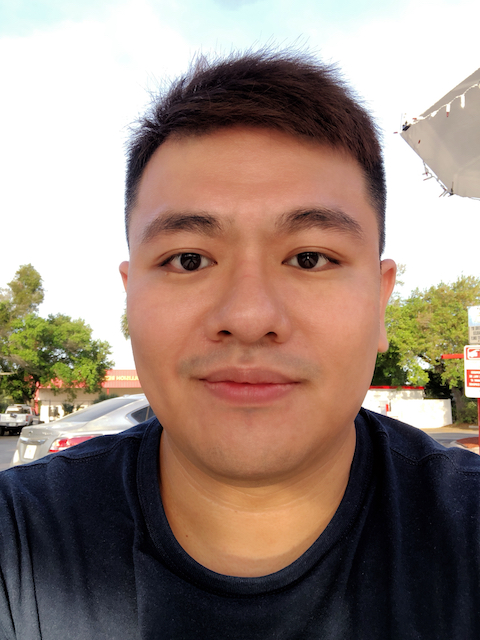

|
Cheng-Lung (Leo) Chen
|
 |
Operations Research Consultant @ American Airlines
Working on Airline Disruption Recovery
Connect with me via
|
About Me
I am an operations research consultant in Operations Research and Advanced Analytics (ORAA) team at American Airlines. As a consultant, I provide periodic and ad-hoc analytics support for the crew scheduling technology team. In addition, I develop new features and maintain the mathematical optimization engine associated with the crew recovery system for airline disruption that goes into the production pipeline.
I receive my Ph.D. in operations research at University of Central Florida advised by Dr. Vladimir Boginski. My research interests include mixed-integer programming, complex networked system modeling and optimization and optimization under uncertainty. Before coming to UCF, I received my MS in operations research from Ohio State University, MS in industrial engineering from Arizona State University and a Bachelor of Business Administration from Soochow University, Taiwan.
Publications and Conference Proceedings
C. Chen, E. Pasiliao, and V. Boginski, A Polyhedral Approach to Least Cost Influence Maximization in Social Networks, to appear in Journal of Combinatorial Optimization, 2022. (Preprint)
C. Chen, Q. Zheng, A. Veremyev, E. Pasiliao, and V. Boginsk, Failure Mitigation and Restoration in Interdependent Networks via Mixed-integer Optimization. IEEE Transactions on Network Science and Engineering, vol. 8, no. 2, pp. 1293-1304, 1 April-June 2021. (DOI)
C. Chen, E. Pasiliao, and V. Boginski, A Cutting Plane Method for Least Cost Influence Maximization. In: Chellappan S., Choo KK.R., Phan N. (eds) Computational Data and Social Networks. CSoNet 2020. Lecture Notes in Computer Science, vol 12575. Springer, Cham, 2020. (DOI)
C. Chen, S. Mohan and M. Zhang, Fix-and-Optimize Heuristic and MP-based Approaches for Capacitated Lot Sizing Problem with Setup Carryover, Setup Splitting and Backlogging. Proceedings of the 6th International Workshop on Lot Sizing, 2015.
Industry Research Intern Position
Research Intern | Mitsubishi Electric Research Laboratories
Visiting Research Associate | Mathematical Modeling and Optimization Institute at Eglin Air Force Research Laboratory
Honor and Awards
Bonder Award from Seth Bonder Foundation for INFORMS Doctoral Student Colloqiumn 2021
David T. & Jane M. Donaldson Memorial Scholarship, College of Engineering and Computer Science, University of Central Florida (2020 - 2021)
Gerald R. Langston Endowed Scholarship, College of Engineering and Computer Science, University of Central Florida (2019 - 2020)
Journal Reviewer
Energy Systems
Optimization Letters
IEEE Transactions on Power Systems
Computers and Industrial Engineering
and many more…if you would like to assign me some papers to review
Professional Membership and Service
Member, Institute of Industrial and System Engineers
Member, Mathematical Optimization Society
Member, Institute of Operations Research and Management Science
Chapter President, INFORMS - OSU Chapter (2016 - 2017)
|